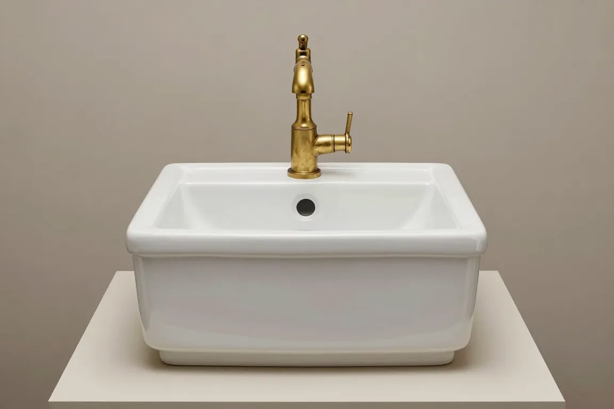

ceramics · 1880 to now · also: Belfast sink, London sink, Fireclay kitchen sink
A deep, square, white sink cast in fireclay. Thick walls, a rolled rim and a weir overflow make a sink that takes heat and weight, and it stays in use in kitchens today.

Core thesis
A kitchen sink must be deep, heavy and glazed so hard that a pot, a brush and boiling water do not mark it.
Design principles
Cast the sink in one piece of fireclay, with a wall 20 to 30 mm thick.
Make the basin 450 to 600 mm deep in front, so that a large pan fits flat.
Cut a weir overflow, a slot 40 mm wide, at the back of the Belfast type.
Keep the inner corners rounded with a radius of 25 to 40 mm, so that dirt does not stay.
Glaze every face in white, and glaze the inside twice for a hard surface.
Roll the front rim into a bead 30 mm wide, which makes a clean edge.
Set the sink on two brick piers or cantilever brackets, with a gap of about 20 mm to the wall.